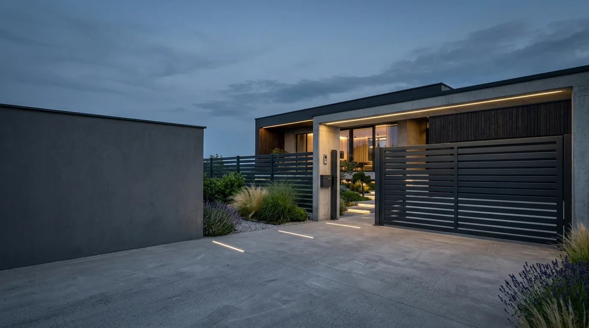
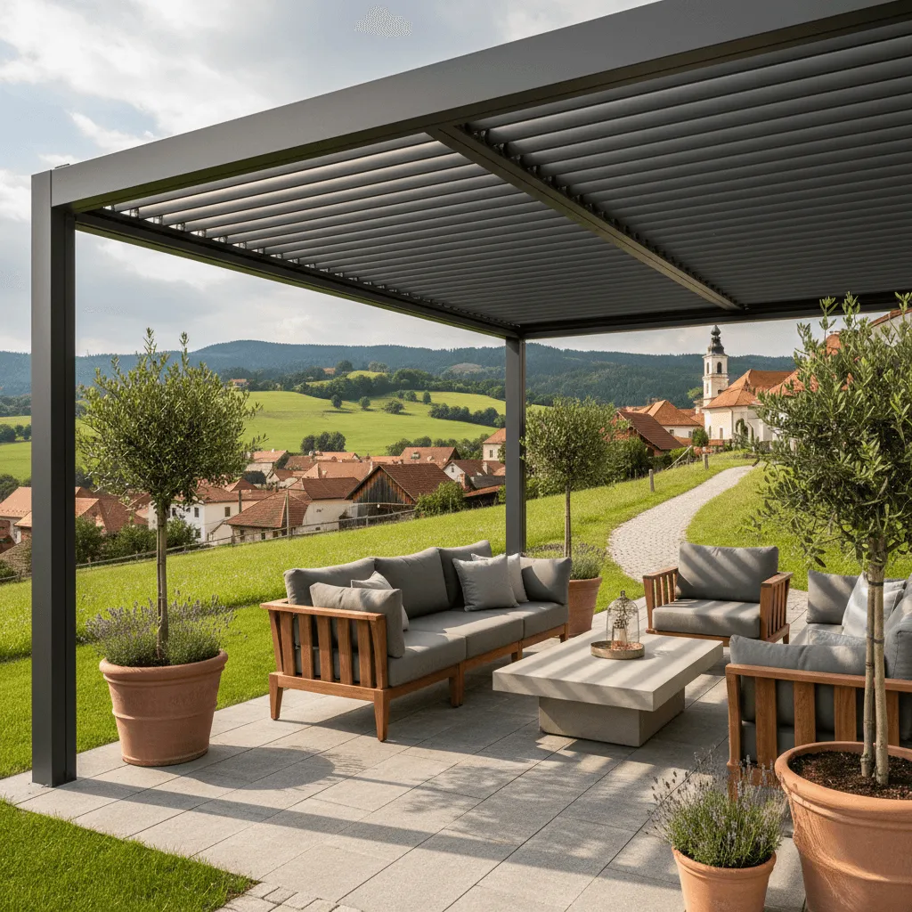
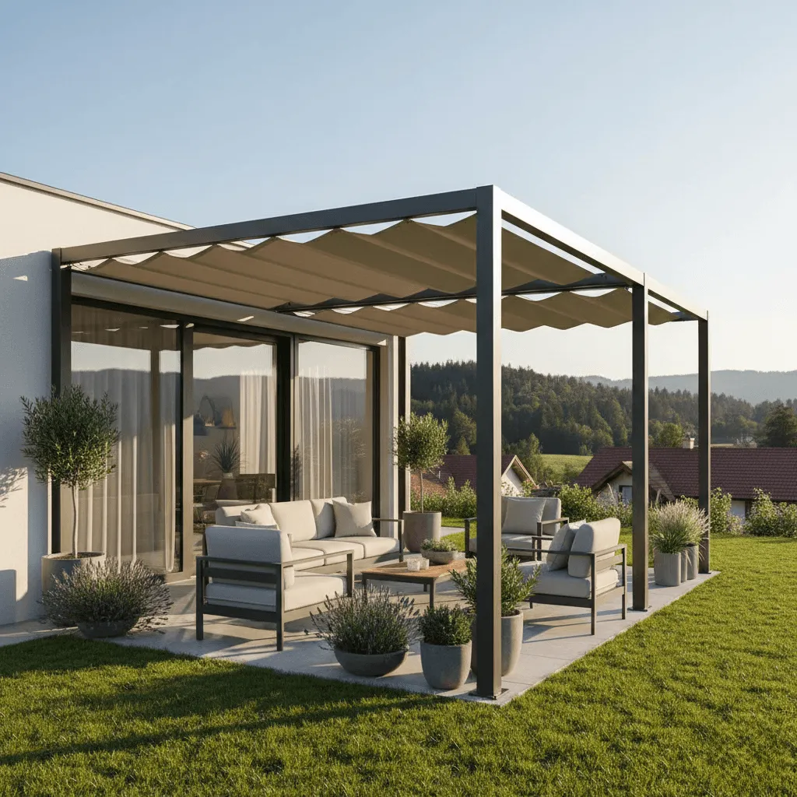
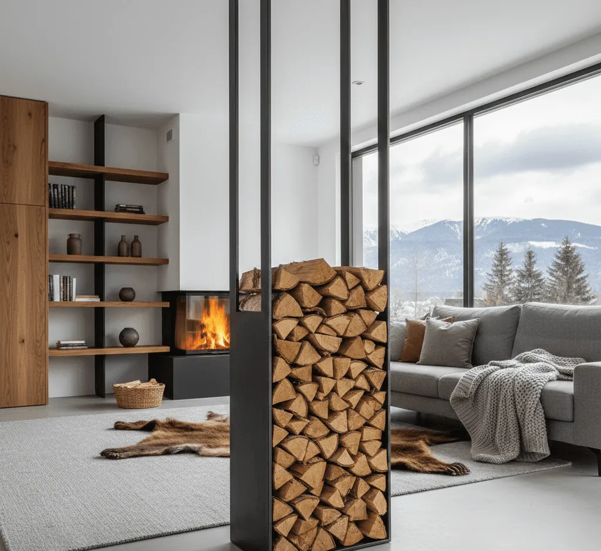
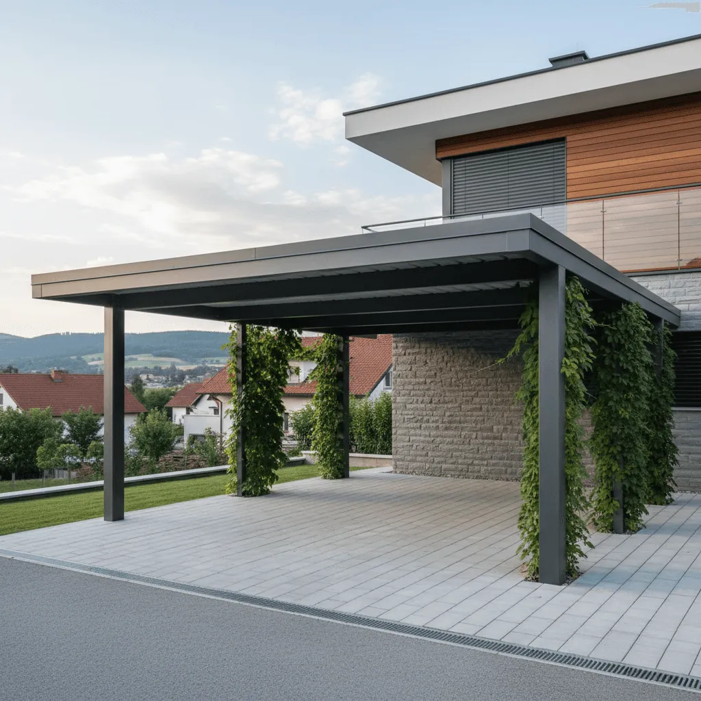
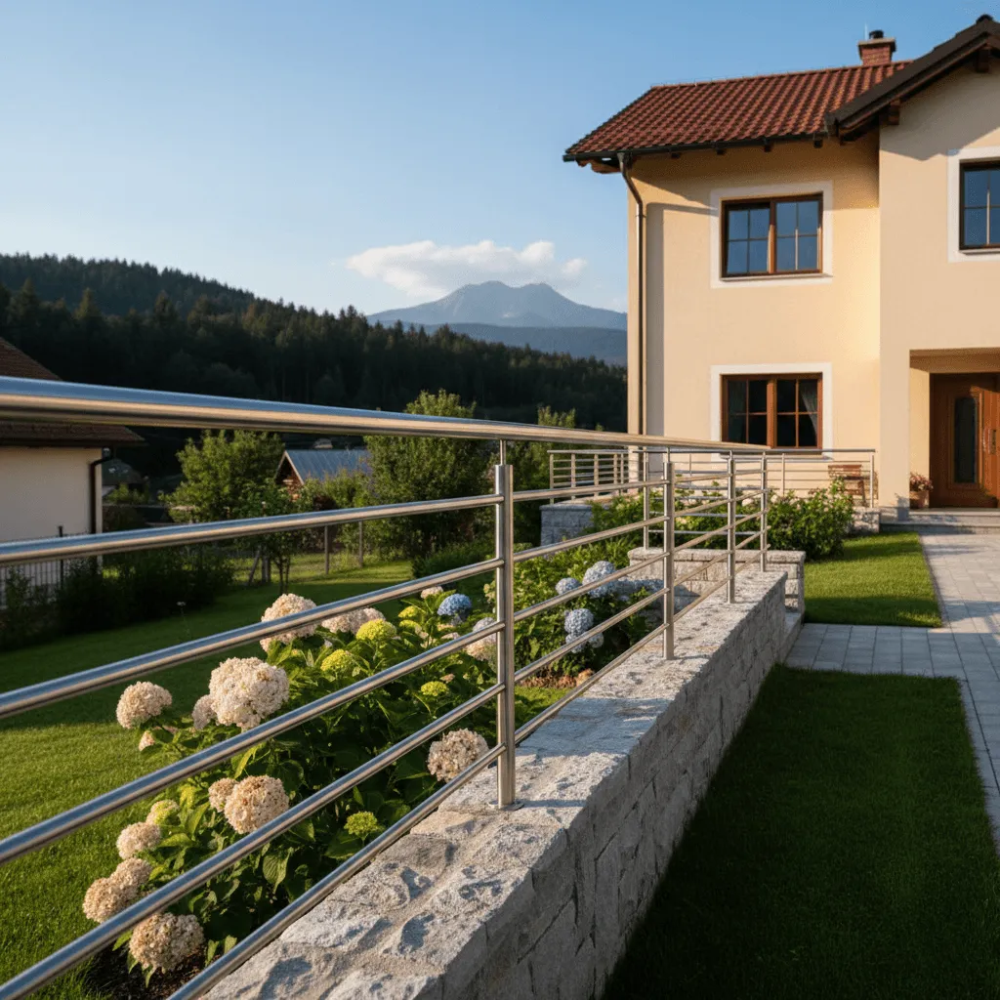

01
Dvoriščna in drsna vrata
Krilna in drsna dvoriščna vrata ter vrtna vrata po meri, usklajena z ograjo – z avtomatiko ali brez.

Nadstreški, pergole in ograje po meri za sodobne domove in objekte. Pred izdelavo prejmete 3D prikaz.

Pri STEELDOM izdelujemo nadstreške, pergole in ograje iz jekla za stanovanjske in poslovne objekte. Vsak projekt obravnavamo individualno – od ogleda in meritev do izdelave in montaže.
Pred izdelavo prejmete 3D prikaz konstrukcije, da točno veste, kaj boste dobili.
Ogled na lokaciji in priprava ponudbe sta brezplačna in neobvezujoča.
Preden začnemo, vidite točno, kako bo konstrukcija izgledala na vašem objektu.
Na izdelavo in montažo – za dolgoročno zaupanje in mirno glavo.
Delujemo po vsej Sloveniji, po dogovoru tudi na drugih lokacijah.
Odkrijte, katera od naših storitev je primerna za vaš projekt.
Krilna in drsna dvoriščna vrata ter vrtna vrata po meri, usklajena z ograjo – z avtomatiko ali brez.

Balkonske, stopniščne in vrtne ograje iz jekla ali inoxa, v klasični ali sodobni izvedbi.

Notranje in zunanje stopnice iz jekla ali v kombinaciji jekla in lesa, izdelane natančno po meri prostora.

Sodobne jeklene pergole s senčilom, platnom ali lamelami, ki združujejo zaščito pred soncem in lep videz terase.

Podnožja miz, police, drvarniki, predelne stene in drugi elementi v sodobnem industrijskem slogu.
Podesti, platforme, nosilci, stopnišča in manjše jeklene konstrukcije za podjetja in kmetije.
Od prvega klica do končane montaže – jasno, pregledno in brez presenečenj.
Pokličite ali izpolnite obrazec in na kratko opišite, kaj potrebujete.
Pridemo na lokacijo, vzamemo mere in skupaj pregledamo možnosti. Ogled je brezplačen.
Pripravimo 3D prikaz konstrukcije in brezplačno, neobvezujočo ponudbo.
Po potrditvi konstrukcijo izdelamo v naši delavnici – natančno po meri.
Konstrukcijo urejeno zmontiramo. Na izdelavo in montažo velja 2 leti garancije.
Primeri nadstreškov, pergol in ograj, ki jih izdelujemo po meri.

Pri tem projektu smo izdelali jekleni nadstrešek po meri, prilagojen objektu in prostoru naročnika. Čiste linije, sodoben videz in funkcionalnost.
»Z nadstreškom smo zelo zadovoljni. Izvedba je bila urejena, delo opravljeno korektno in brez zapletov.«
Pri tem projektu smo izdelali jekleno pergolo po meri za zunanji prostor naročnika – preprosto in v skladu z okolico.
»Pergola je narejena natančno in izgleda zelo lepo. Komunikacija je bila jasna in korektna.«

Pri tem projektu smo izdelali jekleno ograjo, zasnovano z mislijo na varnost in urejen videz objekta.
»Z ograjo smo dobili točno to, kar smo iskali – funkcionalno in estetsko rešitev.«
Preberite izkušnje naročnikov z našim delom in sodelovanjem.
»Od prvega dogovora do montaže je potekalo vse gladko. Končni rezultat se lepo ujema z objektom.«
Naročnik – nadstrešek»Delo je bilo opravljeno profesionalno, brez nepotrebnih zapletov. Priporočam.«
Naročnik – ograja»Končni izgled nadstreška je zelo dober. Veseli smo, da smo se odločili za sodelovanje.«
Naročnik – nadstrešekImate dodatna vprašanja? Pošljite nam povpraševanje spodaj.
Delujemo po Sloveniji. Glede na projekt se lahko dogovorimo tudi za izvedbo na drugih lokacijah.
Trajanje je odvisno od obsega in zahtevnosti projekta. Točen čas izvedbe določimo po ogledu in dogovoru.
Da, priprava ponudbe je brezplačna in neobvezujoča.
V večini primerov dovoljenja niso potrebna. Če so potrebna dodatna soglasja, vas na to pravočasno opozorimo.
Da. Na izdelavo in montažo nudimo 2 leti garancije.
Da, pri izvedbi se trudimo, da posegi čim manj motijo vsakodnevno uporabo objekta.
Kontaktirajte nas, opišite svoje želje in dogovorili se bomo za ogled ter nadaljnje korake.
Za dodatne informacije ali povpraševanje nas kontaktirajte. Z veseljem vam bomo odgovorili in skupaj poiskali ustrezno rešitev.